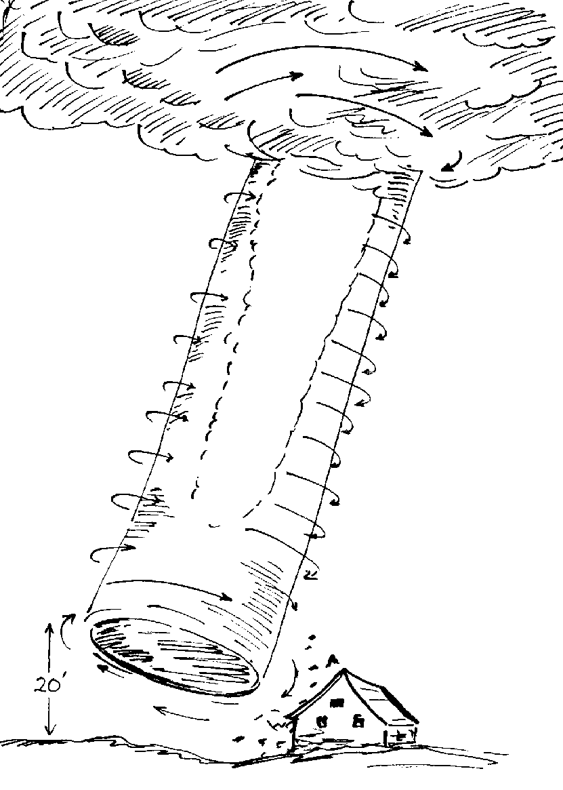
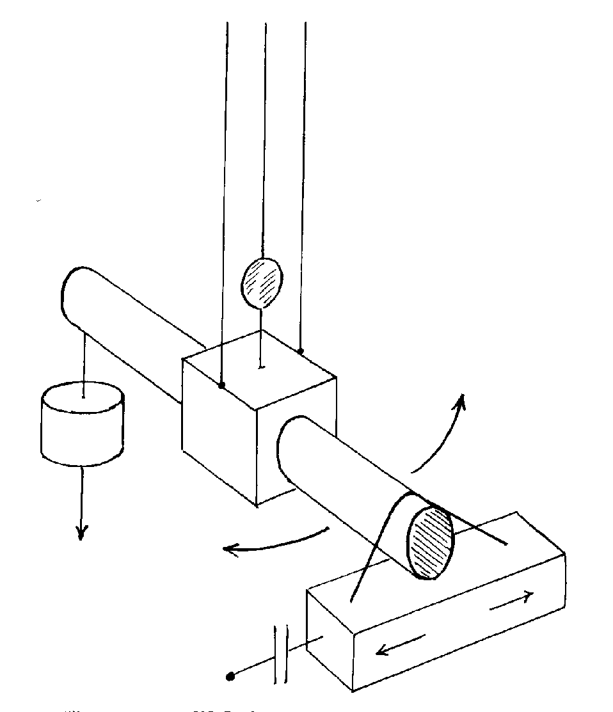
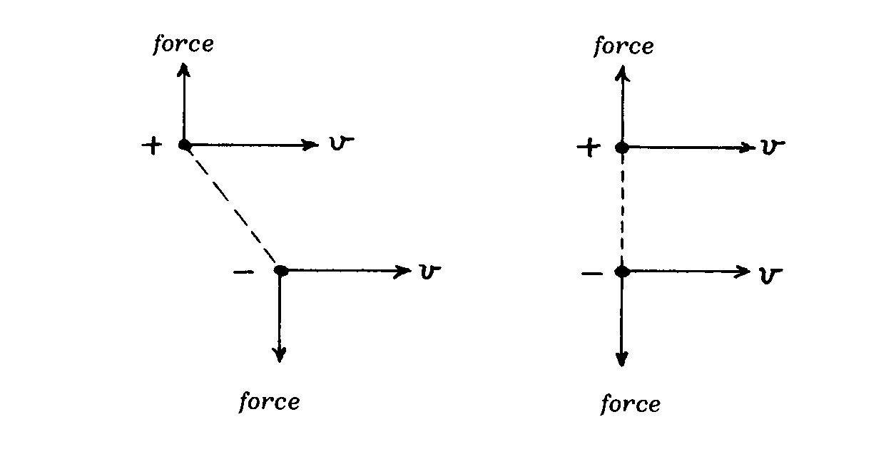
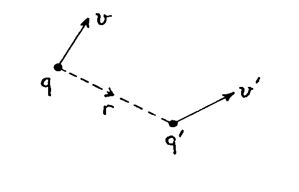
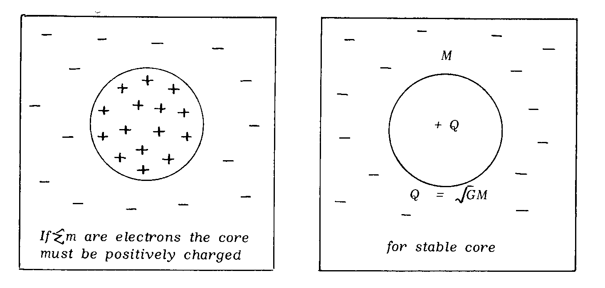
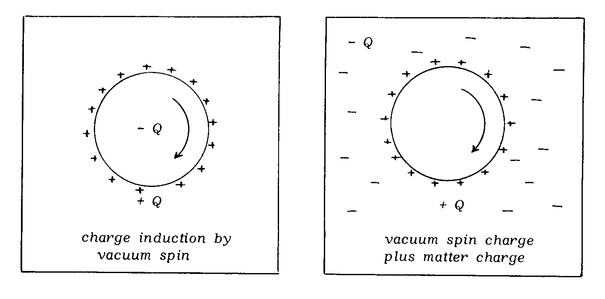

We no longer worry about what happened to the energy released by the gravitational field when the Sun was first formed. There was enough energy from this source to sustain the present level of solar radiation for about 20,000,000 years. We suppose that it was all radiated away long ago. However, it must have performed some role during the early stages of the Sun's creation and it is this which I find of interest.
For example, if the energy released was somehow all stored by the Sun as kinetic energy, the Sun would have to move at about 500 km/s. Curiously, measurements of the Earth's motion through space by reference to the supposed-isotropic cosmic background radiation do indicate speeds of this general order (E. K. Conklin, 'Velocity of the Earth with respect to the Cosmic Background Radiation', Nature, v. 222, p. 971; 1969). This then leads one to ask whether the gravitational energy released is perhaps conserved in the local cosmic environment as a state of motion.
Speculation such as this raises problems of momentum balance. We know that interactions between matter must satisfy the action and reaction law of Newton. Angular momentum is conserved in any complete system subject to central laws of force such as the law of gravitation. This follows from energy conservation principles.
However, the source of angular momentum of the solar system poses very perplexing problems. We would like to think that the planets were formed from the Sun, but the planets revolve in their orbits in exactly the same sense as the rotating Sun. Somehow the Sun must have acquired a substantial angular momentum when it was first formed and somehow it shed most of that angular momentum in giving birth to the planets.
So difficult is this problem that philosophers have resorted to the unlikely hypothesis that another star once passed close to our Sun, imparting angular momentum and inducing planetary creation. Such an event, they recognized, is so improbable that the solar system could be unique in the universe, assuring mankind a rather special place in the cosmic scene.
I prefer to regard the problem of the source of the Sun's angular momentum as a clue linked with the storage of gravitational energy released when it was formed.
One example is the mysterious energy source of tornadoes. It has been argued very persuasively by Vonnegut (B. Vonnegut, 'Electrical Theory of Tornadoes', Journal of Geophysical Research, v. 65, p. 203; 1960) that this energy really comes from the electrical discharges we associate with thunderstorms but the very substantial angular momentum of the tornado is also a problem. It may be that the energy somehow concentrates the angular momentum of an ordinary whirlwind or, as Vonnegut writes: " it is possible that the vortex is initiated directly by electrical energy." Vonnegut also remarked that: "an understanding of ball lightning may very well be necessary if the tornado puzzle is to be solved."

Thus ball lightning becomes the second enigma. It is the problem of glowing spheres which are regularly seen to float about in the air following a thunderstorm. They have an aetherial character because they can pass through walls, get inside aircraft and vanish suddenly, sometimes explosively with release of substantial energy. They are so peculiar and subject to such strange reports that they evoke a great deal of scepticism. However, the fact remains that they are a mysterious scientific phenomenon produced by lightning. They contain energy of some 107 joules per cubic metre and apparently form as spinning spherical objects. The implication is that they have an associated angular momentum.
In the laboratory there are, to my knowledge, two reports of anomalous behaviour which are seemingly relevant. In 1972 a demonstration at a meeting of the Institution of Electrical Engineers in U.K. surprised its author. A rotor in a machine speeded up when the power was switched off. It happened and yet could not be reproduced in later efforts to study the phenomenon (E. Laithwaite, 'Unexplained Phenomenon', Electronics & Power', v. 18, p. 360; 1972). It is as if, by some very special circumstance, energy was stored as rotational kinetic energy in the environment of the machine and was fed back to the machine when it was switched off.
The other report appeared in the German publication Umschau in 1975 (R. G. Zinsser, 'Kinetobarische Effekte - ein neues Phanomen?', Umschau, v. 5, p. 152; 1975). Experiments are here reported as consistently verifying a phenomenon which defies explanation. An energy pulse communicated at high frequency across a capacitative coupling is absorbed in a torsion balance. After the pulse has subsided, a unidirectional torque prevails in the system for up to two hours for no apparent reason. It is as if energy is stored by some kind of unseen flywheel that feeds energy back to the apparatus slowly once the power is switched off in the system.

It is clear from these examples that there is a case to answer and we can rightly examine the source of the Sun's angular momentum in relation to electrical action and the rotation of an unseen medium. I am therefore suggesting that the vacuum medium itself may exhibit properties attributable to its rotation. Before developing this thought, however, I wish to give one more example of the problem we have with the balance of action and reaction if we choose to ignore the role of the vacuum medium in interactions between matter.
By suspending a charged capacitor any transverse motion should result in a turning effect until the line joining the effective centres of charge is at right-angles to the motion. Only then will action balance reaction in a steady uniformly-moving system.

The experiment was performed by Trouton & Noble in 1903 (F.T. Trouton & Noble, 'The Mechanical Forces acting on a Charged Electric Condenser moving through Space', Phil Trans. Roy. Soc. London, v. 202A, p.165; 1903)). They sought to detect the Earth's linear motion through space, but a null result was reported. It gave stimulus to relativistic doctrine but equally it demonstrated the inapplicability of Lorentz's electrodynamic formula. The Lorentz law is inadequate to deal with actions between isolated electric charges in motion.
All the empirical evidence before that time had involved the interaction of effectively closed circuital motion with individual charges. This did not give enough empirical data to formulate a unique law of electrodynamics. It was a point well appreciated by Maxwell because he wrote about this in his great treatise (J. C. Maxwell, 'A Treatise on Electricity and Magnetism,, Section 526 of 3rd Edition, 1891. See p. 173 of reprint vol.II by Dover Publications, New York, 1954). He presented four alternative laws of electrodynamics, all equally valid for the closed circuit charges in motion.
This problem attracted my attention because there is an interesting choice available in the formulation of the likely general law. Either one has to admit inequality of action and reaction in the linear sense or one has to accept it from the point of view of rotation. This, bear in mind, applies to a system which may not be complete because we ignore the presence of charge in motion in the vacuum itself. We seek a law of electrodynamics applicable solely to interaction between two charges. [I note here that the attempt by Ampere to say that action and reaction balance applies both for linear and angular momentum does not afford a simple form of law that I can regard as 'likely'].
Faced with this choice and guided by the null result of the Trouton-Noble experiment it seemed that the mutual electrodynamic action of two charges cannot develop a torque. This favoured the third law of electrodynamics in Maxwell's work [provided a minus sign replaces the plus sign before the middle term in the following equation]. Maxwell's third law, expressed in scalar vector notation rather than quarternion form, was:

[Note here that the law with the plus sign ensures that the interaction of the two charges cannot produce an out-of-balance linear force but normally will produce an out-of- balance force couple tending to turn the orientation of the charge pair in space. In contrast the law with the minus sign precludes such turning action but allows linear force imbalance. There is no way in which the far more complicated law of Ampere can reduce to a form compatible with gravity given that the charge velocities can be in any direction relative to the charge separation vector.]
Now, independently of such a choice based on hypothesis, there is theoretical justification for deducing the law empirically. This comes from an analysis of the magnetic field energy deployment and its change when two charges separate.
The law [with the minus sign replacing the plus sign] has two very interesting consequences. When applied to charges of like polarity moving with the same velocity we obtain an inverse square law of attraction exactly of the form needed to correlate with Newton's Law of Gravitation. This gives basis for unifying field theory. Secondly, there is the curious problem of the linear imbalance of action and reaction, which arises for generally-directed charge motion or, as analysis has shown [1969a], for parallel motion if the interacting charges have different mass.
Aspden's Law of Electrodynamics is:
"There is some evidence that a new theoretical approach could break the stalemate in the development of nuclear fusion, which appears to offer the only source of energy that could prolong our civilization far into the future."
Such is the possible importance of resolving the problems which are addressed here.

[Note that the author was here using cgs units in which the vacuum has a magnetic permeability and a dielectric constant both set at unity, but there is purpose in using k for generality in this analysis. The vacuum medium is not deemed to be capable of reacting to a magnetic field in any way that would endow it with a magnetic permeability other than unity in this system of cgs units. It can, however, break up into a kind of fluid crystal form when matter is present and then exhibit a dielectric constant. More will be said about that in these Web pages by particular reference to the topic discussed in reference [1976a] where the Fresnel coefficient is applied to the vacuum medium to explain the basis of the null finding in the Michelson-Morley experiment.]
One way of developing a charge distribution is by a strong electric discharge. The fast moving electrons will be drawn together by the 'pinch effect', so generating a radial electric field centred on the axis of the discharge. If the vacuum medium reacts to develop a compensating effect then it will absorb the field energy to sustain a vacuum spin about the discharge axis. This spin may be shared by the air surrounding the discharge, with the result that the tornado angular momentum becomes explicable.
Another way of developing a charge distribution is by the gravitational condensation of stellar substance. Two heavy masses will have greater mutual acceleration under gravity than two lighter masses. In the cosmic dust from which astronomical bodies form there will probably be quite a few free electrons. Thus the heavier matter will aggregate to form a core temporarily leaving an electron population behind in surrounding space. The core need not stabilize initially by a balance of nuclear energy pressure and gravitational force. It can stabilize by a balance of gravitation and the mutual electric repulsion of the positive charge associated with the core. Therefore we know that when an astronomical body is first created it has an electric charge given by G1/2 times its mass, where G is the constant of gravitation.
As explained already, this charge will then develop a vacuum spin and we can formulate a mathematical relationship between this speed of rotation and the mass density of the body, involving only the value of G and the density parameter d of the vacuum.
[The following six illustrations, which should be self-explanatory, appeared opposite page 8 in the 1977 paper.]



Suffice it to say at this stage that the creation of the solar system need present no insuperable mystery of the kind which has troubled us to date. The data verify the hypotheses involved, because we can deduce the same numerical vacuum density property from three separate creation processes. These are the asteroid creation, the Sun creation and the Earth creation. Furthermore, when this then-known parameter of the vacuum is applied to the formulae for satellite creation, we deduce the satellite/parent mass ratio in reasonable accord with that of the solar system and the Earth/Moon system.
[The evidence as shown in a box illustration used in the 1977 lecture is reproduced below under four headings, three being the creation processes just mentioned.]
SUN CREATION:
If the Sun had 100% of the angular momentum of the present solar system when created it would have (2/5)MsR2w or (3.2)x1050 cgs units of angular momentum, where its mass is denoted Ms and its radius R is (6.96)x1010 cm. Ms is (1.989)x1033 gm. Hence w is (8.3)x10-5 rad/s. For the Sun dm is 1.4 gm.cc and, as G is (6.67)x10-8, we obtain from the preceding equation:
EARTH CREATION:
For the Earth-Moon system, according to R.A. Lyttleton (Science Journal, v. 5, p. 53, May 1969), the Earth rotated once every 5.5 hours before the Moon was ejected. dm for Earth is 5.5 gm/cc. Therefore, again from the preceding equation:
ASTEROID CREATION:
For the Asteroids the data of G. P. Kuiper (Celestial Mechanics, v. 9, p. 321, May 1974) show that the mean speed of rotation is once in 6 to 7 hours. If we estimate the value of dm as 4 to 5 gm/cc, say 4.5 gm/cc, this gives: